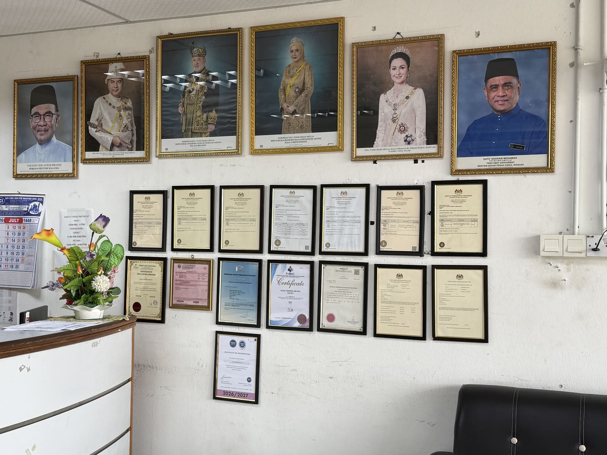
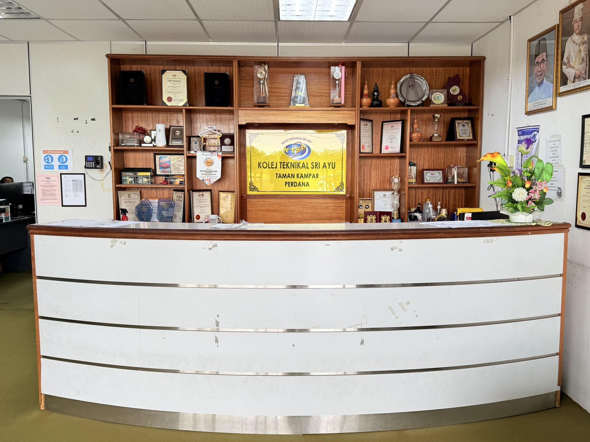
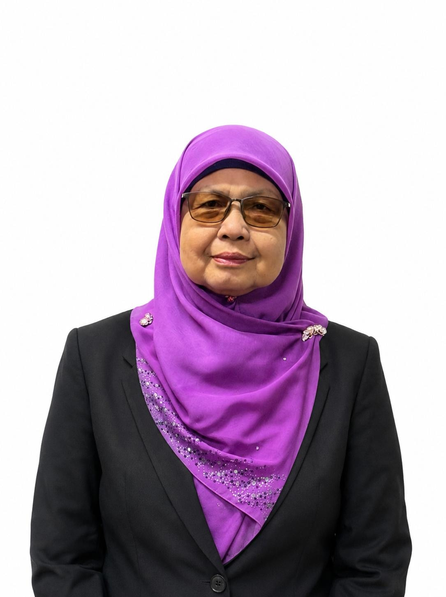
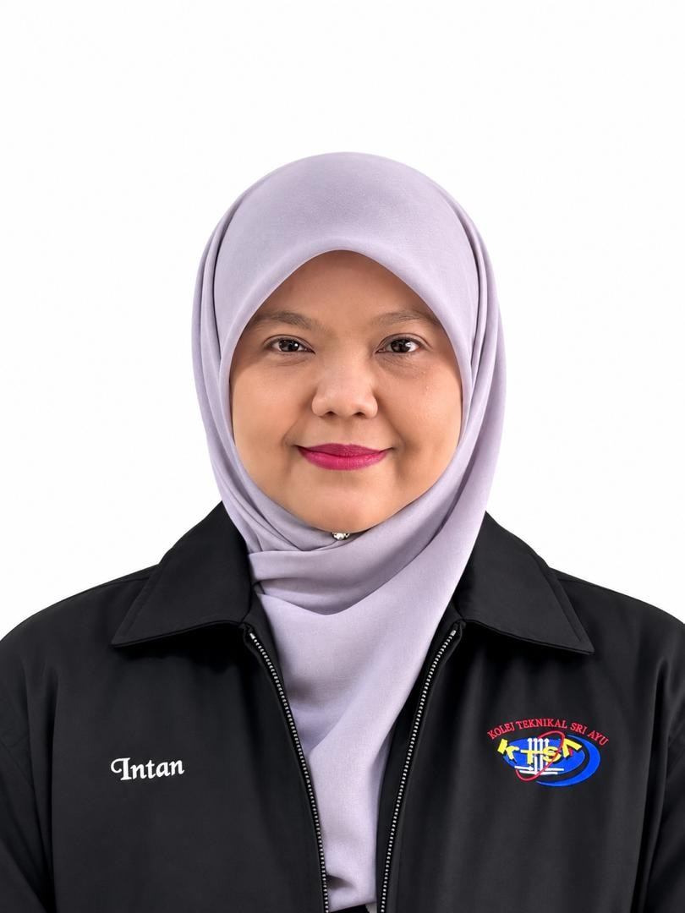
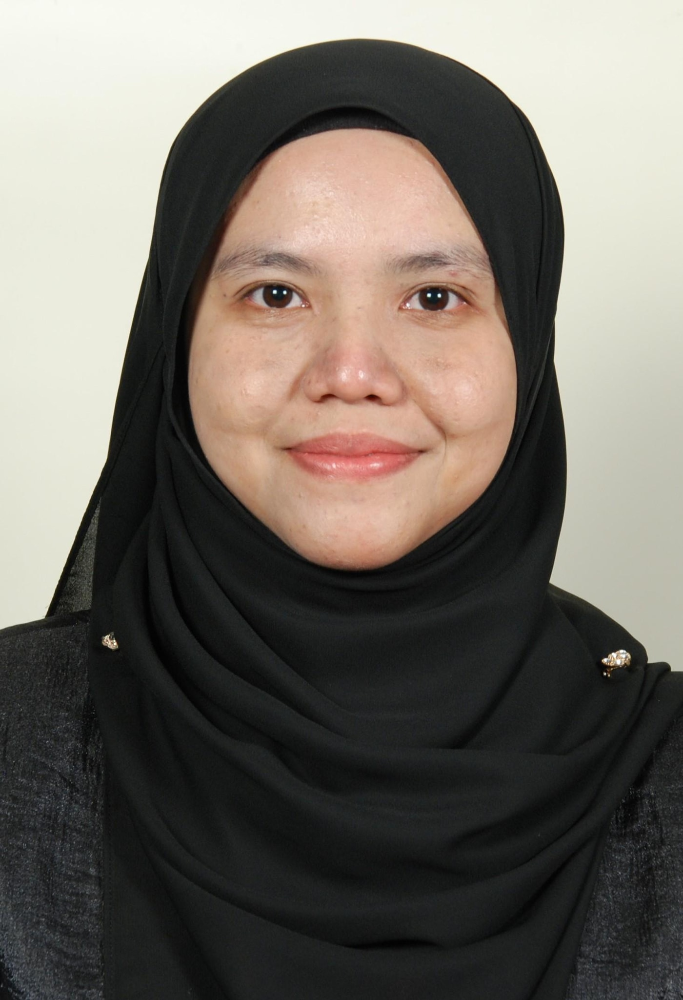
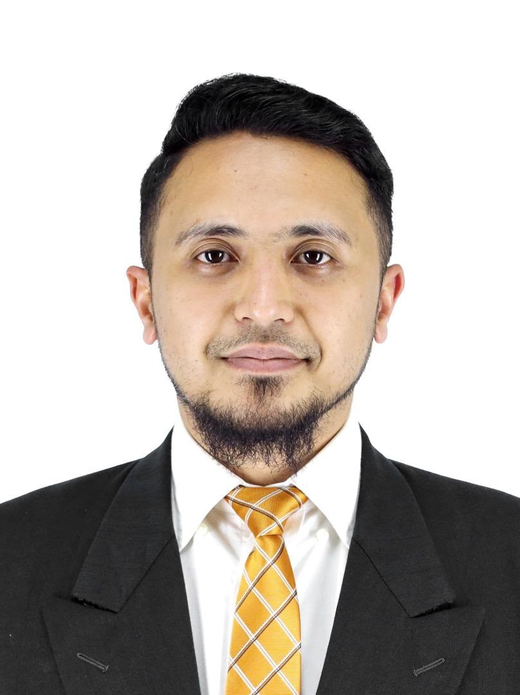
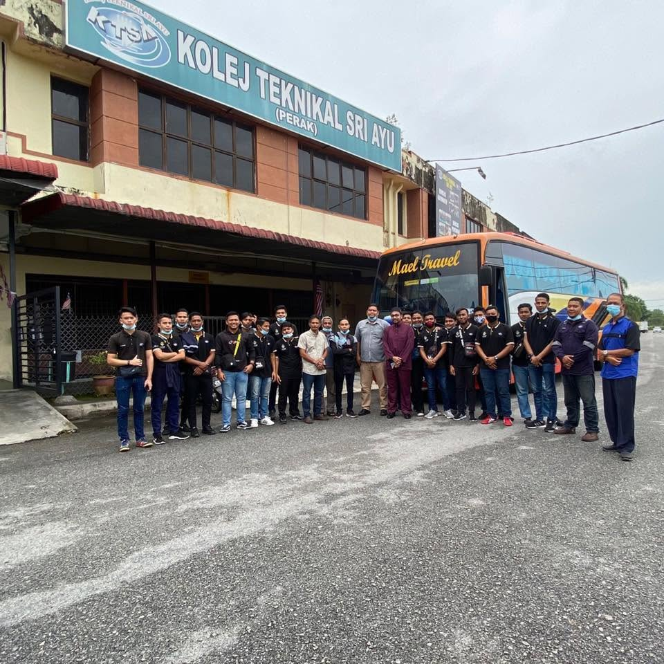
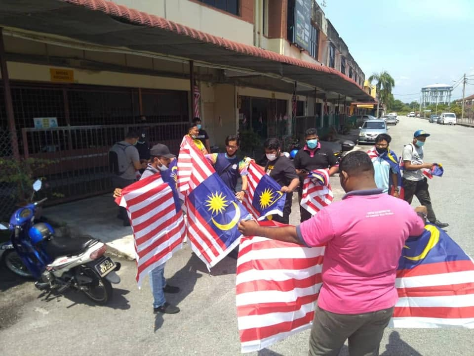

Latar belakang, visi misi, pencapaian dan kepimpinan Kolej Teknikal Sri Ayu.
Latar belakang penubuhan dan hala tuju Kolej Teknikal Sri Ayu.
Kolej Teknikal Sri Ayu bermula sebagai Institut Perdagangan Sri Ayu (IPSA), diasaskan pada tahun 1984 oleh Hj Mazlan B Salleh di Slim River, Perak. Pada tahun 1987, IPSA berpindah ke Taman Kampar Jaya, Perak dan mula beroperasi sebagai sebuah Institusi Pengajian Tinggi (IPT) swasta yang menawarkan kursus Sijil Perdagangan Dalam Malaysia (SPDM) di bawah Kementerian Pendidikan Malaysia.
Pada tahun 2004, institusi ini dinaiktaraf menjadi Institusi Pengajian Tinggi Swasta (IPTS) di bawah Kementerian Pengajian Tinggi (KPT), dengan penawaran kursus Diploma Pengurusan Perniagaan. Hala tuju kolej kemudian beralih sepenuhnya kepada latihan teknikal dan vokasional bermula tahun 2005, apabila kolej mula menawarkan kursus-kursus TVET di bawah Majlis Latihan Vokasional Kebangsaan (MLVK), Kementerian Sumber Manusia. Jabatan ini kemudiannya dinamakan semula sebagai Jabatan Pembangunan Kemahiran (JPK) pada tahun 2006.
Kini, Kolej Teknikal Sri Ayu memberi tumpuan kepada tiga bidang kemahiran teras — Automotif, Penyaman Udara dan Elektrik — yang disusun mengikut standard Sijil Kemahiran Malaysia (SKM) Tahap 2 dan 3. Dengan gabungan pengajaran teori dan latihan praktikal di bengkel sebenar, graduan kolej dilengkapi kemahiran yang relevan dan sedia memasuki alam pekerjaan.
Ditubuhkan1984, sebagai Institut Perdagangan Sri Ayu (IPSA)
PengasasHj Mazlan B Salleh
LokasiKampar, Perak
Jenis InstitusiKolej TVET Swasta
Bidang LatihanAutomotif, Penyaman Udara, Elektrik
PersijilanSKM Tahap 2 & 3
Badan BerkaitanJabatan Pembangunan Kemahiran (JPK)
Menghasilkan tenaga pekerja mahir yang berilmu, proaktif, sensitif dan berdaya saing.
Sepanjang penubuhannya, Kolej Teknikal Sri Ayu terus komited membangunkan kualiti latihan dan kredibiliti kolej.
Diasaskan oleh Hj Mazlan B Salleh di Slim River, Perak.
IPSA berpindah ke Taman Kampar Jaya, Perak dan mula menawarkan kursus Sijil Perdagangan Dalam Malaysia (SPDM) sebagai IPT swasta di bawah Kementerian Pendidikan Malaysia.
Dinaiktaraf menjadi Institusi Pengajian Tinggi Swasta (IPTS) di bawah Kementerian Pengajian Tinggi (KPT), dengan penawaran kursus Diploma Pengurusan Perniagaan.
Mula menawarkan kursus-kursus TVET di bawah Majlis Latihan Vokasional Kebangsaan (MLVK), Kementerian Sumber Manusia. Jabatan ini kemudiannya dinamakan semula sebagai Jabatan Pembangunan Kemahiran (JPK) pada tahun 2006.
Menawarkan tiga program peringkat Sijil Kemahiran Malaysia (SKM) Tahap 2 & 3 — Automotif, Penyaman Udara dan Elektrik.


Struktur pentadbiran dan pengurusan Kolej Teknikal Sri Ayu secara menyeluruh, merangkumi Ahli Lembaga Pengarah, Bahagian Pengurusan, Bahagian Keselamatan dan Bahagian Kursus TVET.




Sebahagian aktiviti dan kenangan pelajar Kolej Teknikal Sri Ayu di luar bilik kuliah dan bengkel.


Ketahui program yang kami tawarkan dan mulakan langkah pertama ke arah kerjaya teknikal anda.